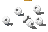

Authentic RSC bone reference

Dagger — selected

All canvases are 48 × 32 pixels. Top: native size at 100% browser zoom. Bottom: matching 8× nearest-neighbour pixel zoom. The whip occupies 40 × 22 pixels; the selected dagger occupies 28 × 19. Backdrop is preview-only.

Whip prompt: simplify the approved coiled spinal whip into chunky pale vertebrae, exposed bone handle and narrow slate-blue tissue connections. Generated with built-in imagegen, then nearest-neighbour fitted to the native canvas with binary alpha. No in-game assets changed.